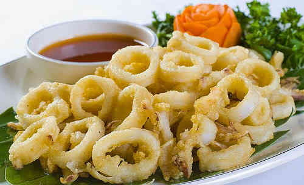

Best Filipino Recipe

Calamares (Fried Squid)
Prep time
10 mins
Cook time
3 mins
Total time
13 mins
SERVES: 3
Ingredients
½ lb medium to large sized squid, cleaned and sliced into rings.
¾ cup all-purpose flour.
1 piece raw egg, beaten.
¾ cup breadcrumbs.
1 teaspoon salt.
½ teaspoon ground black pepper.
2 cups cooking oil.
Instructions:
Combine squid, salt, and ground black pepper then mix well. Let stand for 10 minutes.
Heat a cooking pot the pour-in cooking oil.
Dredge the squid in flour then dip in beaten egg and roll over breadcrumbs.
When the oil is hot enough, deep-fry the squid until the color of the coating turns brown. Note: This should only take about 2 to 3 minutes in medium heat. Do not overcook the squid.
Remove the fried squid from the cooking pot and transfer in a plate lined with paper towels.
Serve with sinamak or Filipino dipping sauce.
Share and enjoy!